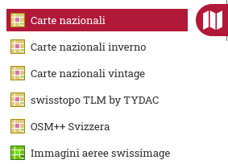
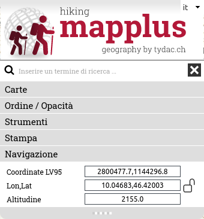
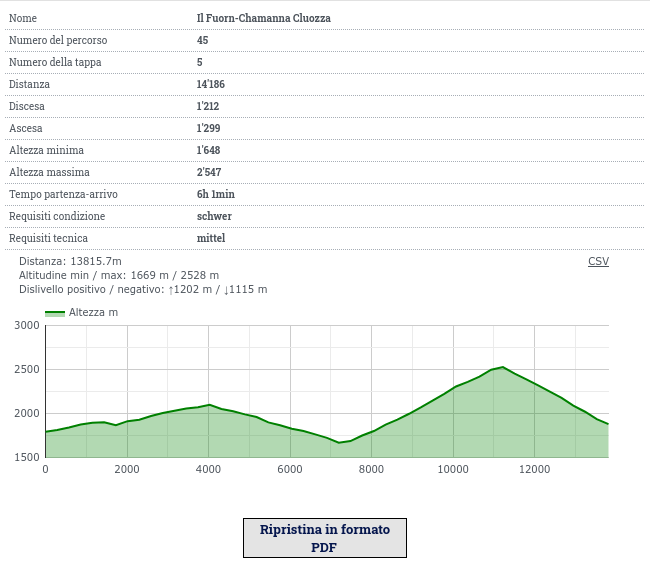
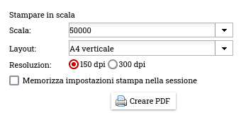
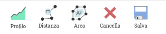
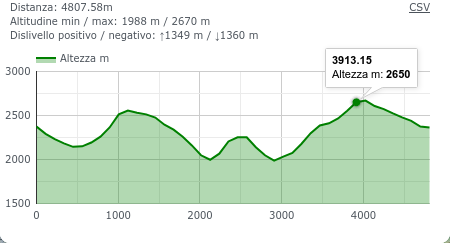
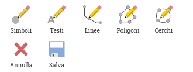

MAP+ Hike - Aiuto
Contenuto
Carte e Funzioni
Strumenti
Navigazione
Per navigare sulla mappa hai le seguenti opzioni:

- Ingrandire, rimpicciolire: rotellina del mouse, funzioni +/- o i tasti +/- della tastatura
- Spostare: cliccare e trascinare o i tasti frecce
- Finestra: tieni premuto il tasto Shift, clicca e trascina
- Localizzazione (GPS)
- Vista iniziale: fare clic sull'icona "Vista totale"
Ricerca
Puoi cercare per::
- Comune
- Codice Postale / Località
- SvizzeraMobile: percorsi e tappe
- Points of Interest come Hotels, Ristoranti, Capanne ecc.
- Nomi locali, laghi, montagne ecc. (swissnames by swisstopo, più di 400'000 oggetti)
Esempi di tecniche di ricerca rapide ed efficienti
Digita parti del o il testo completo che stai cercando. Opzionalmente combinato con altre parti di testo:
- Città di Coira: "chur"
- Attorno al lago di Saoseo: "saoseo" -> rifugio, lago, nome locale, scima
- Bernina: "bernina" -> Ospizio, ritoranti, percorsi e tappe SvizzeraMobile nell'area
- Hotel Sternen Muri: "ster mur"
- Capanna Blüemlisalp: "blü berg"
Visualizzazione e ricerca coordinate

Se il lucchetto è aperto = blu o verde (dipende dai colori del layout), le coordinate vengono visualizzate in modo dinamico quando si sposta il mouse sulla mappa.

Se il lucchetto è chiuso = rosso (fare clic su di esso per farlo), le coordinate vengono aggiornate solo quando si fa clic sulla mappa. Ciò ti consentirà di copiare / incollare le coordinate di una posizione specifica.
Se si desideri cercare per coordinate, inserisci la coppia desiderata separata da una virgola o da uno spazio e premi il tasto "Enter".
Carte
Mappe di sfondo

Come sfondo puoi scegliere (dipende dall'applicazione):
- Carte nazionali swisstopo
- Carte nazionali inverno swisstopo
- Carte nazionali vintage swisstopo
- swisstopo TLM by TYDAC (TLM: modello topografico del paesaggio)
- OSM++ Svizzera: Cartografia basata su OpenStreetMap
- Immagini aeree swissimage
Interrogazione e esporto dati SvizzeraMobile

Cliccare sulla funzione "base di dati". I dati di SvizzeraMobile possono essere filtrati, visualizzati e scaricati:
Utilizzando le funzioni della tabella, i dati possono essere ordinati e filtrati a piacere, ma anche in combinazione con selezioni geografiche (rettangolo, poligono). I dati selezionati possono essere scaricati in diversi formati: MS-Excel, JSON, XML, CSV, Text, ecc.
Per istruzioni dettagliate, consultare le pagine di aiuto distinte
Altre funzioni

Altre funzioni sono:
- Rimuovere tutti i temi
- Google StreetView:
- Naviga in StreetView. la mappa verrà aggiornata (Posizione e direzione).
- In alternativa, puoi spostare l'oggetto StreetView sulla mappa. Viene cercata e mostrata la registrazione StreetView più vicina.
- Per avere più spazio per la mappa e Street View, puoi rimuovere il controllo di selezione delle mappe (fai clic sui tre punti a sinistra della mappa).
- Vista 3D dell'area
Carte

È possibile visualizzare i dati dei seguenti temi:
- Sentieri e infrastruttura
- SvizzeraMobile
- SvizzeraMobile e swisstopo sport invernali
- Gastronomia e alloggi
- Trasporto
- Natura e paesaggio
- Informazioni supplementari utili
Interrogazione di informazioni
Per la maggior parte degli oggetti sulle mappe è possibile richiedere informazioni dettagliate (basta cliccare sull'oggetto). Vengono visualizzati anche profili generati automaticamente per tutti i sentieri escursionistici e i percorsi e le tappe SvizzeraMobile. Queste informazioni possono essere elaborate anche in formato PDF. Gli oggetti SvizzeraMobile contengono anche link a informazioni su SvizzeraMobile.
Esempio:

Strumenti
Sono disponibili i seguenti strumenti (vedi sotto per i dettagli):
- Misurare e profili sotto "Misurazioni"
- Disegno
Stampa
 Stampa PDF in scala
Stampa PDF in scala
Viene visualizzata la seguente finestra di dialogo. Scegli scala, layout, risoluzione e, facoltativamente, inserisci un titolo per la tua mappa:

IMPORTANTE: Per poter stampare in scala devi disattivare qualsiasi ridimensionamento offerto dal tuo software PDF (come adattamento o riduzione del formato carta). Esempio:

Misurare

Profilo

Misura della distanza con generazione del profilo
Fare clic sul punto iniziale desiderato e continuare a fare clic su un numero qualsiasi di punti intermedi. Per terminare fare doppio clic. Un profilo viene generato e visualizzato in una finestra - ora puoi:
- Spostare il mouse sul profilo. La posizione è mostrata sulla mappa
- Fare clic sul profilo per ingrandirlo, ad esempio a fini di stampa
Puoi aggiungere e spostare punti della polilinea della distanza, il profilo viene aggiornato. Per terminare la funzione, fai di nuovo clic sull'icona, scegli un'altra funzione o passa a mappe o cerca.

Distanza / Superficie
 Distanza
Distanza
Cliccare sul punto iniziale desiderato e continuare a fare clic su un numero qualsiasi di punti intermedi. Per terminare fare doppio clic. Dopo aver terminato, puoi ancora aggiungere e spostare punti. Per terminare la funzione, fai di nuovo clic sull'icona, scegli un'altra funzione o passa a mappe o cerca.
 Superficie
Superficie
Cliccare sul punto iniziale desiderato e continuare a fare clic su un numero qualsiasi di punti intermedi. Per terminare fare doppio clic. Dopo aver terminato, puoi ancora aggiungere e spostare punti. Per terminare la funzione, fai di nuovo clic sull'icona, scegli un'altra funzione o passa a mappe o cerca.
Cancellare: Clicca sull bottone "Cancella".
Salva come segnalibro: La misurazione può essere facoltativamente salvata come segnalibro. Se si salva una misurazione, è presente un tag aggiunto all'URL. È possibile salvare l'URL come segnalibro o copiare l'URL e, ad esempio, inviandola a qualcuno. Oltre alla misurazione, tutti i parametri della la mappa vengono salvati (puoi tornare esattamente dove eri).
Disegno

 Simboli
Simboli
Cliccare sulla funzione per attivarla. Verrà mostrata una scelta di simboli. Scegli qualsiasi simbolo e inizia a disegnare. Ripeti a volontà. Per terminare fare clic sul pulsante chiudi o su qualsiasi altra funzione. I simboli possono essere modificati e spostati dopo aver terminato. Per fare ciò, basta cliccare sul simbolo, dopodiché si può spostarlo o anche scegliere un altro simbolo.
Cancellare:
- Oggetto singolo: clicca sull'oggetto e fai clic sul cestino nella finestra di dialogo
- Tutti gli oggetti: fare clic sul pulsante "Cancella"
 Testi
Testi
Cliccare sulla funzione per attivarla. Verrà visualizzata la finestra di dialogo di testo. Scegli carattere, dimensione colore e inserisci un testo; fai clic sulla mappa per posizionarlo. Ripeti come preferisci. Per terminare fare clic sul pulsante Chiudi o su qualsiasi altra funzione. Gli oggetti di testo possono essere editati e spostati in qualsiasi momento dopo aver terminato. Per fare ciò, basta fare clic sul punto di vertice del testo e trascinarlo se si desidera spostarlo e / o modificare o inserire un altro testo, modificare le proprietà, ecc.
Cancellare:
- Oggetto singolo: clicca sull'oggetto e fai clic sul cestino nella finestra di dialogo
- Tutti gli oggetti: fare clic sul pulsante "Cancella"
 Linee
Linee
Cliccare sulla funzione per attivarla. Verrà visualizzata la finestra di dialogo degli stili di linea. Scegli tipo, larghezza e colore; fai clic su un numero qualsiasi di punti nella mappa; per finire fare doppio clic. Ripeti come preferisci. Per terminare fare clic sul pulsante Chiudi o su qualsiasi altra funzione. Gli oggetti linea possono essere modificati e spostati in qualsiasi momento dopo aver terminato. Per fare ciò, basta cliccare sulla linea, quindi aggiungere vertici, cambiare vertici e / o proprietà.
Cancellare:
- Oggetto singolo: clicca sull'oggetto e fai clic sul cestino nella finestra di dialogo
- Tutti gli oggetti: fare clic sul pulsante "Cancella"

 Aree / Cerchi
Aree / Cerchi
Cliccare sulla funzione per attivarla. Verrà visualizzata la finestra di dialogo degli stili di area. Scegli tipo, larghezza del bordo e colori; fai clic su un numero qualsiasi di punti nella mappa; per finire fare doppio clic. Ripeti come preferisci. Per terminare fare clic sul pulsante chiudi o su qualsiasi altra funzione. Gli oggetti area possono essere modificati e spostati in qualsiasi momento dopo aver terminato. Per fare ciò, basta cliccare sull' area, quindi aggiungere vertici, cambiare vertici e / o proprietà.
Cancellare:
- Oggetto singolo: clicca sull'oggetto e fai clic sul cestino nella finestra di dialogo
- Tutti gli oggetti: fare clic sul pulsante "Cancella"
Salva come segnalibro: Il disegno può essere facoltativamente salvata come segnalibro. Se si salva un disegno, è presente un tag aggiunto all'URL. È possibile salvare l'URL come segnalibro o copiare l'URL e, ad esempio, inviandola a qualcuno. Oltre al disegno, tutti i parametri della la mappa vengono salvati (puoi tornare esattamente dove eri).
Versione mobile
La versione mobile per smartphone ha una funzionalità ridotta, come segue:
- Carte di sfondo
- Aggiungere carte
- Localizzazione GPS
- Disattiva tutte le carte
- Vista totale
- Interrogazione Oggetti
- Ricerca